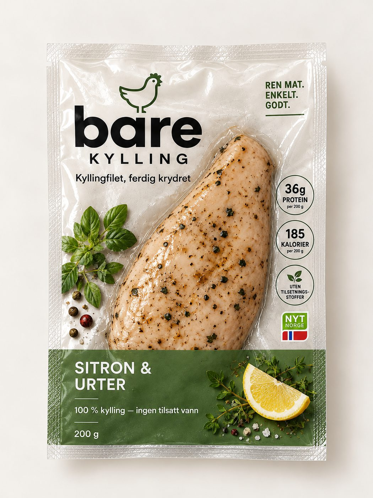
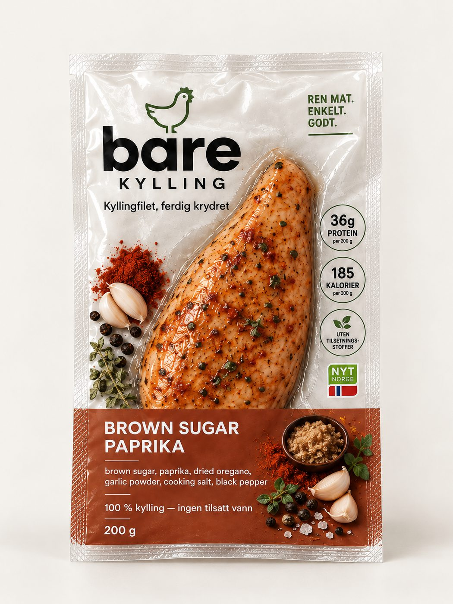
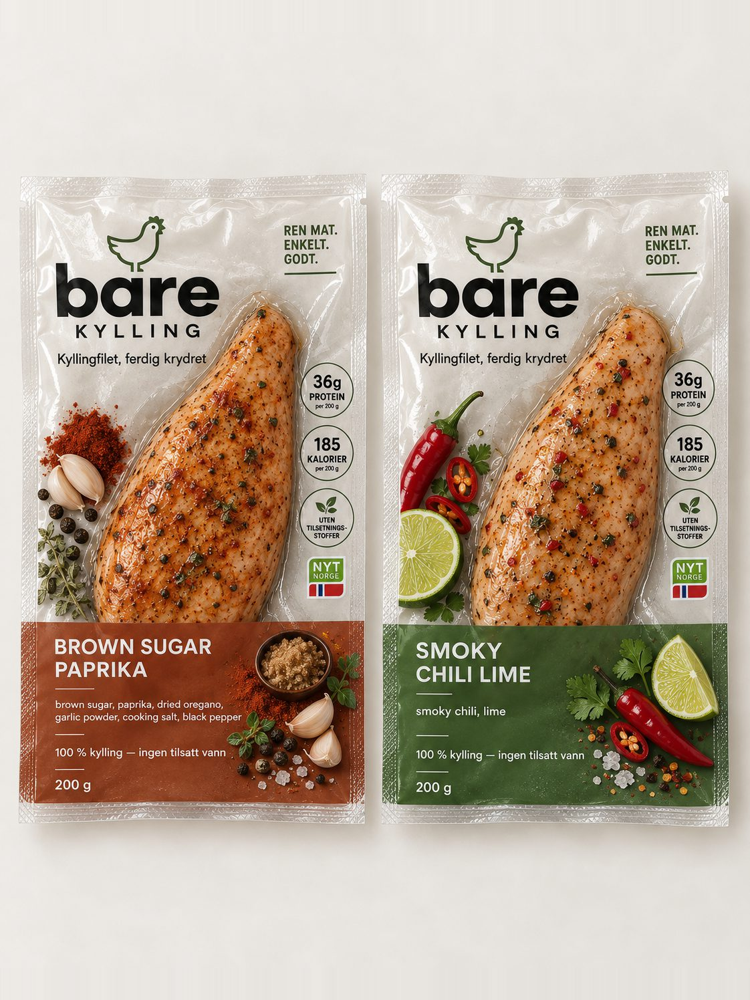
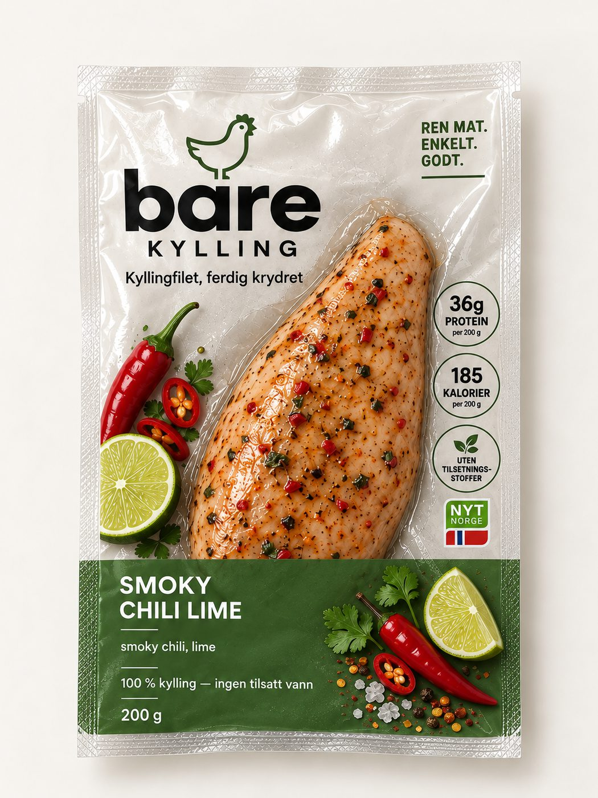

Proteinbar & shake
- Ultraprosessert format
- Søtt, uansett når på dagen
- Må blandes eller pakkes opp
- Føles som et kosttilskudd
Hvorfor Bare?
Barer. Pulver. Shakes. Meal prep-bokser. Vi ville bare ha ordentlig mat som var klar når vi var.
Så vi begynte med kylling.
Mat først. Protein følger med.
Problemet
Riv opp. Spis. Ferdig.
Derfor
Du slipper steking, krydring og oppvask. Vi gjorde jobben på forhånd.

images/pakke-apnet.jpgKyllingbryst med ingredienser du kjenner igjen. Ingredienslisten skal kunne leses ferdig før du er ferdig med å åpne pakken.

images/kylling-naerbilde.jpgSkole, jobb, trening eller på farten. Den tar like liten plass som alt det andre du allerede har i sekken.

images/pakke-i-sekk.jpgSpis den rett fra kjøleskapet, eller varm den raskt. Begge deler er riktig svar.

images/kylling-i-wrap.jpgSammenlignet
| Egenskap | Bare Kylling | Proteinbar | Proteinshake | Vanlig meal prep |
|---|---|---|---|---|
| Ekte kylling | Ja | Nei | Nei | Kommer an på |
| Salt mat | Ja | Som regel søtt | Nei | Ja |
| Klar med én gang | Ja | Ja | Må blandes | Må lages først |
| Ingen matlaging | Ja | Ja | Ja | Nei |
| Kan spises alene | Ja | Ja | Ja | Ja |
| Enkel å ta med | Ja | Ja | Kommer an på | Kommer an på |
Tabellen sammenligner format og bruk – ikke næringsinnhold.
Åpenhet
Vi jobber med første batch. Legg igjen e-posten din, så sier vi fra når kyllingen er klar.
Sett meg på listaDe på lista får vite det først.